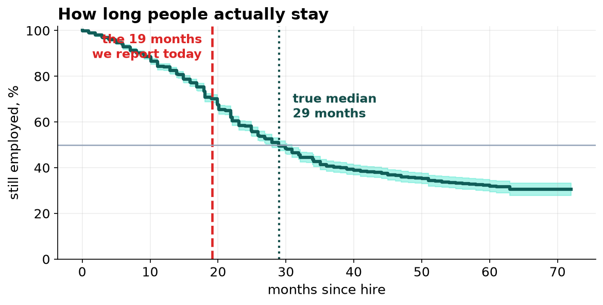
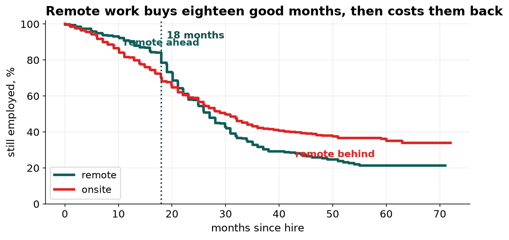

People Stay 29 Months, Not 19. And Remote Work Is Not the Question We Thought.
The tenure figure in the board pack leaves out everyone who has not left yet, which is 57 percent of the company. Remote work turns out to halve resignations for eighteen months and then double them, which is a management problem with a date on it rather than a policy question.
Recommendation
Keep the remote-work policy and build something specific at the eighteen-month mark. Change the retention figure we report from 19 months to 29, and stop reporting mean tenure of leavers entirely. Platform is the best-retaining team in the company, not the worst.
The number in the board pack is measuring the wrong thing
We report mean tenure of people who left: 19.1 months. That figure excludes 1,733 employees who are still here, and it always will, because anyone who stays a long time has not left yet and so never enters the average.
Using the standard method for this, which counts a current employee as evidence that people last at least as long as they have so far, median tenure is 29.0 months. We have been understating retention by about a third for as long as we have been reporting it.

| Still with us | |
|---|---|
| At 12 months | 84% |
| At 24 months | 58% |
| At 36 months | 41% |
| At 48 months | 36% |
Platform is not in trouble
Platform shows the shortest tenure in the company, 6.9 months against roughly nineteen everywhere else, and it has been raised twice as a concern. Platform was created eighteen months ago. Nobody in it can have long tenure, and only 5.3 percent of its people have resigned at all.
93 percent of Platform's hires are still here at twelve months, the best of any team. The worst is Customer Support at 76 percent. Any duration statistic will make a young team look like a failing one, and we should stop comparing teams on one.
Remote work: the answer changed three times
This is the finding worth the most attention, because the two obvious analyses both say remote work makes no difference and both are wrong in the same way.

| Analysis | What it says | What it would have us do |
|---|---|---|
| Average tenure of leavers | remote stay 3.8 months longer | expand remote work |
| Standard statistical test | no difference, p = 0.17 | ignore the policy |
| Allowing the effect to change over time | resignations halve for 18 months, then double | keep it and manage the 18-month mark |
The middle answer is the one we would normally have accepted, and it is an average of a halving and a doubling. Remote employees resign at half the onsite rate for their first eighteen months, and at twice the onsite rate afterwards.
What we are asking for
One. Retire mean-tenure-of-leavers from every report and replace it with retention at 12 and 24 months.
Two. Design an intervention for remote employees approaching eighteen months. That is where the risk sits and it is a date we can act on in advance.
Three. Close the Platform review and open one on Customer Support, where 24 percent of hires are gone inside a year.